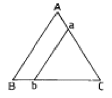
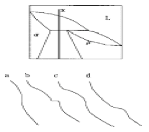
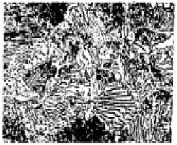
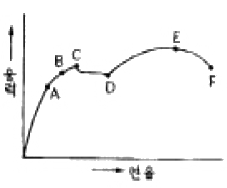
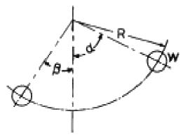

금속재료산업기사 (2005-05-29 기출문제)
1과목: 금속재료
1. 다음 설명 중 틀린 것은?
- 6 : 4황동에 납을 소량 첨가하면 쾌삭성이 향상된다.
- 청동에 탈산제로 P를 첨가한다.
- 다이캐스팅용 Al합금은 라우탈, 실루민 등이 있다.
- 황동에 Si을 소량 첨가하면 내해수성이 나빠진다.
(정답률: 64%)

2. 물리적 성질이 아닌 것은?
- 비중
- 용융잠열
- 열팽창계수
- 충격흡수계수
(정답률: 9%)
3. 탄소강 중 망간(Mn)의 영향을 바르게 설명한 것은?
- 강의 담금질 효과를 증대시켜 경화능이 커진다.
- 강의 점성을 저하시키고 가공성을 해친다.
- 연신율과 경도를 감소 시킨다.
- 주조성을 나쁘게 하고 고온에서 결정입의 성장을 촉진 시킨다.
(정답률: 100%)
4. 의료용(치열 교정용)이나 안경테에 가장 많이 쓰이는 것은?
- 방진 합금
- 세라믹스 합금
- 초탄성 합금
- 자성유체 합금
(정답률: 60%)
5. 소성가공에서 냉간가공의 특징으로 틀린 것은?
- 가공경화로 강도는 증가하나 연신율은 작아진다.
- 가공하기 쉬우며 거친 가공에 적합하다.
- 가공면이 깨끗하고 정밀한 모양으로 완성할 수 있다.
- 가공방향으로 섬유조직이 생기고 판재 등은 방향에 따라 강도가 달라지게 된다.
(정답률: 65%)
6. 탄소가 흑연상태로 유리되어 흑연화되어 있는 주철은?
- 인주철
- 회주철
- 연주철
- 황주철
(정답률: 88%)
7. 0.2% 탄소강의 상온에서 초석 페라이트의 량은? (공석점의 탄소 함량은 0.8%임)
- 25%
- 35%
- 65%
- 75%
(정답률: 43%)
8. 열간가공과 냉간가공의 한계는?
- 재결정온도
- 연성온도
- 소성가공온도
- 용융점
(정답률: 77%)
9. 철의 동소변태에 대한 설명 중 틀린 것은?
- α : 철 910℃ 이하에서 체심입방격자이다.
- γ : 철910 - 1400℃에서 면심입방격자이다.
- β : 철1400 - 1500℃에서 조밀육방격자이다.
- δ : 철1400 - 1538℃에서 체심입방격자이다.
(정답률: 62%)
10. 초경합금에 대한 설명으로 틀린 것은?
- 소결한 복합합금을 초경합금이라 말한다.
- 상온의 경도가 고온에서는 크게 저하된다.
- 압축강도는 강에 비해 높다.
- 인장강도는 강에 비해 낮다.
(정답률: 59%)
11. 분말야금(powder metallurgy)의 특징으로 틀린 것은?
- 절삭공정을 생략할 수 있다.
- 융해법으로는 만들 수 없는 합금을 만들 수 있다.
- 다공질의 금속재료를 만들 수 있다.
- 제조과정에서 융점까지 온도를 올려야 한다.
(정답률: 79%)
12. 상온에서 오스테나이트조직을 나타내는 고망간 특수강은?
- 듀콜강
- 크로멜강
- 고속도 공구강
- 하드 필드강
(정답률: 58%)
13. 황동의 사용 중 또는 보관 중에 잔류된 내부응력에 의해서 균열이 발생하였을 때 가장 적당한 방지법은?
- As 또는 Sb를 첨가한다.
- 암모니아 분위기에서 풀림한다.
- 200 ~ 250℃에서 풀림처리한다.
- 산소 또는 탄산가스 분위기에서 풀림한다.
(정답률: 74%)
14. 규소를 넣어 주조성을 개선하고 구리를 넣어 절삭성을 향상시킨 Al-Cu-Si계 합금은?
- 톰백
- 알루멜
- 크로멜
- 라우탈
(정답률: 75%)
15. 결정의 형성과정 순서가 옳은 것은?
- 결정핵 발생 → 핵의 성장 → 결정경계 형성
- 핵의 성장 → 결정경계 형성 → 결정핵 발생
- 결정경계 형성 → 결정핵 발생 → 핵의 성장
- 결정핵 발생 → 결정경계 형성 → 핵의 성장
(정답률: 73%)
16. 고강도 저합금강으로 자동차용 탄소강판의 대용제품은?
- MARD
- LNGM
- LDCP
- HSLA
(정답률: 74%)
17. 다음 중 강괴에 대한 설명으로 틀린 것은?
- 완전탈산한 강을 킬드강이라 한다.
- 불완전 탈산한 강을 림드강이라 한다.
- 림드강은 기포나 편석이 없다.
- 킬드강은 표면에 헤어크랙(hair crack)이 있다.
(정답률: 60%)
18. 섬유강화 금속의 특징으로 틀린 것은?
- 섬유축 방향의 강도가 크다.
- 전자기적 특성이 우수하다.
- 2 차성형성, 접합성이 있다.
- 비강도, 비강성이 낮다.
(정답률: 62%)
19. 알루미늄 특성에 대한 설명으로 가장 거리가 먼 내용은?
- 알루미늄은 표면에 생기는 산화 피막으로 내식성이 나쁘다.
- 탄산염, 크롬산염, 초산염 등의 중성 수용액에서는 내식성이 좋으나 염화물 용액 중에서는 나빠진다.
- 산성 용액 중에서는 수소이온농도의 증가에 따라 부식이 증가하지 않는다.
- 대기 중에서 내식성이 좋으나 부식률은 대기 중의 습도, 염분 및 불순물 함유량에 따라 똑같다.
(정답률: 24%)
20. 금속이 지니는 일반적인 특성으로 틀린 것은?
- 고체상태에서 결정구조를 갖는다.
- 전기의 양도체이다.
- 열의 양도체이다.
- 전성 및 연성이 나쁘다.
(정답률: 100%)
2과목: 금속조직
21. 순철의 변태점이 아닌 것은?
- A1
- A2
- A3
- A4
(정답률: 72%)
22. 고체를 구성하는 원자 결합 방법의 분류가 아닌 것은?
- 분자결합(molecular bond)
- 금속결합(metallic bond)
- 이온결합(ironic bond)
- 전위(dislocation)
(정답률: 65%)
23. 원자배열이 어느 축을 경계로 전혀 반대의 배열을 갖는 것은?
- 초격자
- 역위상구역
- 중격자
- 장범위 규칙도
(정답률: 89%)
24. 마텐자이트(Martensite)의 결정구조는?
- 면심입방구조(FCC)
- 체심입방구조(BCC)
- 조밀육방구조(HCP)
- 체심정방구조(BCT)
(정답률: 30%)
25. 순금속과 비교할 때 합금에서 얻어지는 일반적인 성질이 아닌 것은?
- 일반적으로 융점이 낮아지므로 주조성이 양호해진다.
- 강도 및 경도가 높아진다.
- 변태가 없는 순금속들끼리 합금하여도 열처리가 가능한 경우가 있다.
- 전기 및 열전도도가 양호해진다.
(정답률: 50%)
26. 냉간가공에 따른 금속재료의 성질 변화 중 틀린 것은?
- 인장강도가 증가한다.
- 경도가 증가한다.
- 연신율이 감소한다.
- 인성이 증가한다.
(정답률: 63%)
27. 2성분(원)계 공정형 합금상태도에서 열분석곡선의 공정반 응정체시간을 나타내고 또한 공정조직의 조성을 산출할 수 있는 기준은?
- Tammann의 삼각형
- 용해도 곡선
- Gibbs의 상률
- 자유도(F)
(정답률: 30%)
28. 어느 물질계의 자유에너지가 G = H - TS으로 주어질 때 S가 뜻하는 것은?
- 내부에너지
- 절대온도
- 엔트로피
- 상태변수
(정답률: 43%)
29. 용질원자가 용매원자의 결정격자 사이의 공간에 들어간 것을 무엇이라 하는가?
- 침입형 고용체
- 치환형 결정체
- 금속간 혼합체
- 재결합 전이체
(정답률: 86%)
30. 물질 중에서 원자가 열적으로 활성화되어 이동하게 되는 현상을 확산이라 하는데 단일 금속 내에서 동일 원자사이에 일어나는 확산을 무슨 확산이라 하는가?
- 불순물확산
- 반응확산
- 자기확산
- 상호확산
(정답률: 86%)
31. 전율고용체를 형성하는 합금이 아닌 것은?
- Al - Ag
- Cu - Ni
- Au - Pt
- Al - Si
(정답률: 48%)
32. 순철의 동소변태에 의하여 나타나는 조직이 아닌 것은?
- α - Fe
- β - Fe
- γ - Fe
- δ - Fe
(정답률: 67%)
33. 격자점에서 원자가 빠진 상태는?
- 규칙격자
- 공격자점
- 전위
- 선결함
(정답률: 82%)
34. 면심입방격자에서의 최근접 원자간 거리는?
- a / √2
- a / 2
- √3 a
- (√3 / 2)a
(정답률: 40%)
35. 그림에서 a, b선으로 표시되는 합금은?

- A조성이 일정하고 BC 조성이 변하는 합금
- B조성이 일정하고 AC 조성이 변하는 합금
- C조성이 일정하고 AB 조성이 변하는 합금
- AB조성이 일정하고 BC 조성이 변하는 합금
(정답률: 82%)
36. 냉간가공으로 금속이 받는 성질의 변화는 풀림처리에 의하여 가공전의 상태로 돌아가는 경향을 가지나 결정립의 모양이나 결정의 방향에 변화를 일으키지 않고 경도, 전기저항 등의 성질만이 변화는 과정은?
- 회복(recovery)
- 재결정(recrystallization)
- 결정립 성장
- 집합 조직(texture)
(정답률: 69%)
37. 재결정 거동에 영향을 주는 요인으로 틀린 것은?
- 재결정 이전의 가공도
- 풀림 온도
- 조성
- 말기 결정입도
(정답률: 39%)
38. 시효경화 합금으로 가장 대표적인 것은?
- Al-Cu합금
- Al-Fe합금
- Al-Pb합금
- Al-Mo합금
(정답률: 69%)
39. 결정격자 중 한개의 원자가 격자사이로 이동하면 그 격자 내에는 격자간 원자와 원자공공이 한쌍으로 된 결함은?
- 원자공공
- 격자간 원자
- 프렌켈 결함
- 크라우디온
(정답률: 56%)
40. 다음 2원계 합금의 포정형 상태도에서 X합금의 냉각곡선에 해당되는 것은?

- a
- b
- c
- d
(정답률: 39%)
3과목: 금속열처리
41. 침탄강이 구비해야 할 조건 중 틀린 것은?
- 침탄·퀜칭경화 후 심부의 인성을 유지하기 위해서는 고탄소강이어야 한다.
- 침탄처리 가열에 의해 결정립의 조대화를 일으키지 않아야 한다.
- 경화층의 경도는 높고, 내마모, 내피로성이 유지되어야 한다.
- 조질성, 가공성이 좋고 제조도 쉬워 가격이 저렴하여야 한다
(정답률: 55%)
42. 금형용 STD 강재를 가열 후 대기중에 냉각시키면 산화, 탈탄이 생기며 표면 상태가 미려하지 못하므로 이를 충족시키기 위해 어떤 냉각이 필요한가?
- 중성가스(N2) 냉각
- 강풍 냉각
- 프레스 냉각
- 오일 냉각
(정답률: 55%)
43. 일반 열처리에서 온도측정에 범용적으로 상용되는 것으로 크로멜-알루멜의 열전대는?
- R 형
- K 형
- J 형
- T 형
(정답률: 알수없음)
44. 백심가단주철의 열처리시 주 목적은?
- 탈탄
- 시멘타이트화
- 구상화
- 오스테나이트화
(정답률: 34%)
45. 질화처리의 목적이 아닌 것은?
- 높은 표면경도를 얻을 수 있다
- 내마모성이 커진다
- 내식성이 우수하다
- 고온에서 처리되는 관계로 변형이 적다
(정답률: 82%)
46. 마퀜칭(Marquenching)에 대한 설명으로 틀린 것은?
- Ms 점 직상에서 가열된 염욕에 담금질한다.
- 담금질한 재료의 내외가 동일 온도에 달할 때까지 항온 유지한다.
- 인상하여 공냉시켜 Ar" 변태를 진행한다.
- 이 때 얻어진 조직은 Pearlite 이다.
(정답률: 54%)
47. 두랄루민에 대한 열처리 방법은?
- 어닐링
- 담금질
- 템퍼링
- 심냉처리
(정답률: 32%)
48. 구상흑연주철의 열처리에서 제1단 흑연화 처리를 한 후 제2단 흑연화 처리를 하는 목적으로 맞는 것은?
- 압축력과 절삭성등을 저하 시키기 위해
- 취성을 촉진 시키기 위해
- 내식성과 조대한 입자를 형성하기 위해
- 충격값이 우수한 고연성(高延性)의 주물을 만들기 위해
(정답률: 86%)
49. STC3 를 950℃에서 1시간 가열 후 노냉한 것이다. 층상으로 나타나 있는 조직명은?

- 페라이트
- 펄라이트
- 오스테나이트
- 마텐자이트
(정답률: 25%)
50. 고속도 공구강의 적합한 열처리 빙법은?
- 화염 열처리
- 염욕 열처리
- 고주파 열처리
- 침탄 열처리
(정답률: 53%)
51. 공석강에 존재하는 대부분의 오스테나이트(Austenite)가 실온까지 담금질하는 동안 마텐자이트로 변태하지 않고 남아 있는 것은?
- 잔류 오스테나이트(Austenite)
- 시멘타이트(Cementite)
- 페라이트(Ferrite)
- 투르스타이트(Troostite)
(정답률: 73%)
52. 표면경화 열처리시 침탄에 나타나는 결함이 아닌 것은?
- 침탄깊이가 시방서의 지정대로 되지 않은 것
- 표면층으로부터 심부에 걸친 탄소농도의 급격한 변화가 된 것
- 재료의 평균경도가 공석강의 경도로 균일하게 된 것
- 표면의 경도가 고르지 못한 것
(정답률: 60%)
53. Ar' 와 Ar" 사이의 온도로 유지한 열욕에 담금질하고 과냉각의 오스테나이트 변태가 끝날 때까지 항온으로 유지해주는 열처리 방법은 무엇인가?
- 시간 담금질(Time quenching)
- 마르템퍼링(Martempering)
- 오스템퍼링(Austempering)
- 오스포밍(Ausforming)
(정답률: 64%)
54. 오스테나이트→마텐자이트조직으로 되기 위한 열처리 방법은 무엇인가?
- 뜨임(tempering)
- 담금질(quenching)
- 풀림(annealing)
- 불림(normalizing)
(정답률: 72%)
55. 강선, 피아노선재 등에 적용되는 것으로 오스템퍼링 열처리 온도의 상한에서 미세한 솔바이트조직을 얻는 열처리 방법은?
- 블루잉
- 파텐팅
- 시간담금질
- 마템퍼링
(정답률: 36%)
56. 화학적 증착법(CVD)에 관한 설명으로 틀린 것은?
- 가스반응을 이용하여 금속, 탄화물, 질화물, 산화물 및 황화물 등을 피복하는 방법이다.
- 저온에서 행하므로 기판 및 모재의 제한이 없고 금속 결합을 하므로 밀착강도가 강하다.
- 반응물질로 염화물 등의 할로겐화물이 사용되며 결정성이 양호한 코팅 막을 얻을 수 있다.
- 피막의 밀착성이 물리적 증착법(PVD)에 비해 양호하며 균일한 코팅을 얻을 수 있다.
(정답률: 85%)
57. 담금질 후 경도를 크게 감소시키지 않고 내부응력을 제거하기 위해 저온뜨임을 행한다. 다음 중 저온뜨임의 목적이 아닌 것은?
- 강인성 증가
- 내마모성 향상
- 퀜칭응력 제거
- 치수의 경년변화(經年變化) 방지
(정답률: 22%)
58. 열처리 전,후에 제품의 흠집, 녹, 유지 등을 제거하기 위해 사용되는 설비 중 액체호닝(liquid honing)에 대한 설명이 옳은 것은?
- 압축공기 3∼7㎏f/㎝2을 써서 연마제와 가공액(물)의 혼합물을 노즐로부터 고속으로 분사시켜 공작물을 다듬질하는 가공법이다.
- 천 따위로 만든 가요성(유연성)이 큰 버프류의 둘레에 연마제를 부착시켜 고속으로 회전하면서 공작물을 연마하는 가공법이다.
- 공작물과 음극의 금속을 특수한 전해액중에 넣고 공작물은 양극, 다른쪽은 음극으로하여 여기에 전류를 통하게하여 전해작용을 행하게 하여 연마하는 가공법이다.
- 탈지할 물건을 음극으로 하여 전해액 가운데 매달아 전해하는 가공법이다.
(정답률: 34%)
59. 베어링용 합금의 필요한 조건으로 틀린 것은?
- 하중에 견딜 수 있는 내 압력을 가져야 한다.
- 마찰계수가 커야 한다.
- 점성과 인성이 있어야 한다.
- 내소착성이 커야 한다.
(정답률: 30%)
60. 심냉처리에 의한 균열과 변형이 발생하는 원인과 방지대책을 설명한 것 중 틀린 것은?
- 심냉처리하기 전에 100∼300℃에서 템퍼링을 한다.
- 심냉처리 온도로부터의 승온을 수(물)중에서 행한다.
- 심냉처리할 때 압축응력이 발생하여 균열이 생긴다.
- 퀜칭처리 전에 탈탄층을 제거하여 탈탄을 방지한다.
(정답률: 65%)
4과목: 재료시험
61. 다음 어느 조건에서 마모가 가장 많이 일어나는가?
- 표면경도가 낮을 때
- 접촉압력이 적을 때
- 윤활상태가 좋을 때
- 접촉면이 매끄러울 때
(정답률: 87%)
62. 용접된 제품의 용접부 표면결함을 검사하기 위하여 침투탐상시험이 끝난 후 지켜야할 안전관리를 설명한 내용으로 틀린 것은?
- 탐상제는 현상제 및 유화제 일부를 제외하고 거의 유성의 가연성 물질로 구성되어 있으므로 유류 혹은 용제류 취급상의 안전과 화재예방에 대한 관리가 필요하다.
- 검사자의 건강 위생에도 유의해야 하며 호흡기 또는 피부상해에 대한 안전수칙을 준수해야 한다.
- 형광침투탐상법에서는 자외선등을 사용하므로 규정된 파장범위의 자외선은 무해하여 장시간 조사하게되면 눈과 피부에 별 영향을 받지 않으므로 주의할 필요는 없다.
- 신뢰성이 높은 시험을 할 때는 우수한 성능의 탐상제를 사용하여 안정된 검사를 해야 하며 검사가 끝난 후 결함무늬는 투명테이프로 전사하여 판정기록으로 활용한다.
(정답률: 100%)
63. 설퍼프린트( Sulfer print ) 법을 가장 올바르게 설명한 것은?
- 철강재료의 결정조직상태를 알아보는 검사법
- 철강재료의 입간부식이나 방향성을 알아보는 검사법
- 철강재료 중의 황화망간(MnS)의 분포상태를 알아보는 검사법
- 철강재료 중의 황, 편석 및 그 분포상태를 알아보는 검사법
(정답률: 80%)
64. 인장시험에서 그림과 같은 그래프를 얻었을 때 시험편의 재질은?

- 연강
- 알루미늄
- 특수강
- 주철
(정답률: 75%)
65. 마모시험편 제작시 주의사항에 해당되지 않는 것은?
- 가공에 의한 잔류응력이나 표면 변질을 최대한 억제한다.
- 불필요한 표면 산화, 기름이나 물 등의 오염을 억제한다.
- 보관시는 데시케이트를 사용한다.
- 시험편은 항상 열처리 하여 사용한다.
(정답률: 88%)
66. 충격시험의 특징으로 틀린 것은?
- 충격치는 재료의 대표적 경도계산에 직접 이용된다.
- 파단시킬 때 흡수한 에너지의 크기로 나타낸다.
- 시편의 노치(notch)형상의 영향을 많이 받는다.
- 재료의 인성과 취성을 판정하는 시험이다.
(정답률: 13%)
67. 침투탐상시험의 현상법이 아닌 것은?
- 습식 현상법
- 건식 현상법
- 속건식 현상법
- 유 현상법
(정답률: 59%)
68. 로크웰(Rockwell) 경도기에 대한 설명으로 틀린 것은?
- 강구 또는 원뿔형 다이아몬드 콘으로 시험편에 압입할 때 생기는 압입된 자리의 깊이에 의해 경도를 측정한다
- B와 C스케일의 예비하중은 모두 10 Kg 을 건다.
- B 스케일은 시험하중이 100 Kg, C 스케일은 150 Kg으로 한다.
- 공식은 HRB = 100 - 500h, HRC = 130 - 500h 이다.
(정답률: 18%)
69. 샤르피 충격시험시 시편의 흡수에너지 E의 측정원리는 그림과 같다. E의 계산식은 어떻게 표현되는가? (단, W : 충격시험에 사용되는 해머의 중량, R : 해머의 회전중심에서 무게중심까지의 거리, α : 들어올린 해머의 각도, β : 시험편 절단 후 올라간 해머의 각도)

- E=WR(cosβ-cosα)
- E=WR(cosβ+cosα)
- E=WR(sinβ-sinα)
- E=WR(sinβ+sinα)
(정답률: 57%)
70. 표점거리가 50mm인 금속 시험편을 인장시험 하였더니 54mm가 되었다. 연신율은 얼마인가?
- 6 %
- 8 %
- 10 %
- 12 %
(정답률: 62%)
71. 와류탐상검사의 장점으로 틀린 것은?
- 고속작업이 가능 하다.
- 시험체의 재질을 판정 할 수 있다.
- 탐상검사의 자동화가 용이하다.
- 비철금속 표면 결함 검출이 가능하다.
(정답률: 50%)
72. 구리나 알루미늄판을 가압 성형하여 변형 능력을 시험하는 것은?
- 스프링 시험
- 에릭슨 시험
- 마모 시험
- 응력측정 시험
(정답률: 70%)
73. 시료의 연마제로 가장 거리가 먼 것은?
- 산화망간(MnO)
- 산화크롬(Cr2O3)
- 알루미나(Al2O3)
- 산화마그네슘(MgO)
(정답률: 36%)
74. 침투탐상시험에 관한 설명 중 틀린 것은?
- 침투액의 도포, 세정, 현상의 3부분으로 구성 되어 있다.
- 모세관 현상을 이용하고 있다.
- 겨울철의 영하의 날씨에도 용이하게 행할 수 있다.
- 주로 표면에 존재하는 미세한 결함 발견에사용 된다.
(정답률: 73%)
75. 항절시험은 어떤 시험에 속하는가?
- 인장시험
- 충격시험
- 전단시험
- 굽힘시험
(정답률: 62%)
76. 압축시험에서 단면치수에 대한 길이의 비에 따라 파괴현상에 차이가 있다. 가늘고 긴 직주(slender column)를 압축하였을 때 굽히면서 파괴되는 현상은?
- 취성파괴(Brittle Fracture)
- 연성파괴(Ductile Fracture)
- 전단파괴(Shear Fracture)
- 좌굴(Buckling)
(정답률: 62%)
77. 일반 탄소강의 현미경 조직검사를 위해 주로 사용되는 부식액은?
- HF 용액
- HCl + 질산
- 질산 + 알콜
- 인산 + 물
(정답률: 50%)
78. 침투탐상법에서 잔여침투제나 현상제를 제거하는 후처리의 가장 큰 목적은?
- 후속공정이나 사용중에 문제를 일으킬 수 있는 경우에 대비하기 위하여
- 색상의 대조를 유지해야하므로
- 침투제 흡출의 유화작용을 돕기 위하여
- 얇은 구조물의 붕괴를 돕기 위하여
(정답률: 82%)
79. 초음파 탐상기 설치 및 조작시 안전관리 사항으로 틀린것은?
- 초음파 탐상기에 충격이나 진동이 가해지지 않도록 한다.
- 초음파 탐상기는 탐상 전에 예열한 후 탐상한다.
- 탐촉자 사용시 무리한 힘을 가하지 않는다.
- 탐상 작업시 시험편 표면에 접촉 매질을 알맞게 발라서 탐촉자의 접촉을 불량하게 한다.
(정답률: 78%)
80. 다음 재료시험법 중 응력 측정법으로 틀린 것은?
- 전기적 시험법(Electrical Test Method)
- 광탄성 시험법(Photo-elasticity Test Method)
- 초음파 시험법(Ultra-sonic Test Method)
- 응력 도료시험법(Stress Coating Test Method)
(정답률: 36%)